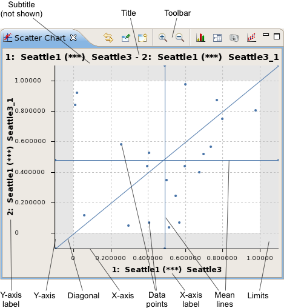
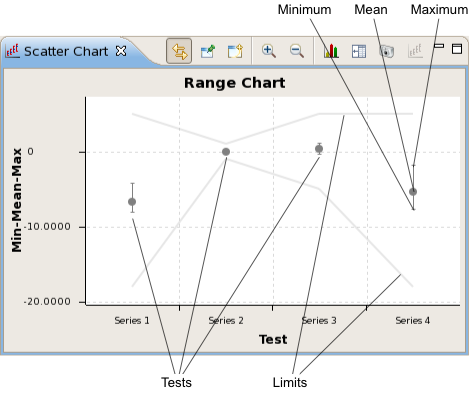
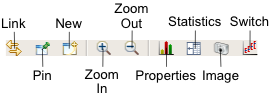

Scatter chart view
The scatter charts visually displays the relationship between one series of results for a device with another series of results for the same device. This mode requires two test summaries to be selected. In a second mode - the range chart - when more than two test summaries are selected, the scatter chart displays a comparison graph of the mean, maximum, and minimum values for each selected test.
A scatter chart is opened by choosing from the shortcut menu of a Test summary tab. It can also be opened using the New button (see below) from the toolbar of another scatter chart or using the menu command.
If two test summary rows are selected, the scatter chart opens in its main mode. There are certain requirements for the selected summaries:
- They must both be tests for the same device.
- They cannot contain per-pin results, unless grouping by pin is activated.
- When tests are grouped by wafer or site, the two selected tests cannot be from different wafers or sites.
- If a particular test result is present in only one of the two selected test, no data point is created in the chart, but the chart is still generated.
- If one of the selected tests has been repeated, only the last set of results from that test is plotted.

If more than two test summary rows are selected, the scatter chart opens in its range chart mode, in which the axes, their titles, and the main chart area are different:

When exactly two tests are selected, you can switch between the two modes using the Switch button on the toolbar (see below).
These are the elements in the main area of the chart (for the toolbar and shortcut menu, see below):
- Title: In the main mode, by default the names of the two tests being displayed. In the range
chart mode, by default "Range Chart"
You can edit the title in the chart properties.
- Subtitle: By default, no subtitle is displayed. You can edit the subtitle in the chart properties.
- Toolbar: The action buttons of the chart. See the Toolbar section, below, for details.
- Y-axis label: In the main mode, this label by default shows the name of the test being
displayed on the y-axis. In the range chart mode, it is by default "Min-Mean-Max".
You can edit this label in the chart properties.
- Y-axis: In the main mode, this is the axis for the values from the second selected test. In range chart mode, it is the axis for the test values.
- X-axis: In the main mode, this is the axis for the values from the first selected test. In range chart mode, it is the axis for the tests.
- X-axis label: In the main mode, this label by default shows the name of the test being
displayed on the x-axis. In the range chart mode, it is by default "Test".
You can edit this label in the chart properties.
- Mean lines: In the main mode, the means for both test series are displayed as lines in the graph.
- Diagonal: In the main mode, this line connects the lower left and upper right corners of the acceptable value space (the area within the limits).
- Limits: In the main mode, the limits for both graphed tests are displayed as red areas along
the borders of the graph.
In the range chart mode, the limits are displayed as gray lines.
- Minimum, mean, maximum: In the range chart mode, the measured values for each test series are displayed as a dot for the mean value and two horizontal ticks for the maximum and minimum values.
- Tests: In the range chart mode, each test is displayed in a column of the graph.
You can zoom in on the chart by drawing a rectangle around the area you want to enlarge (in addition to using the Zoom In button described below). You can reset the zoom level to its default by double-clicking anywhere in the chart area.
Toolbar

The toolbar of a scatter chart view includes these buttons:
- Link: Links the display in the view to the selected row in the data navigation view.
In this mode, if the selection in the data navigation view changes, the display updates automatically.
- Pin: Freezes the display in the view.
- In this mode, the view keeps displaying the rows it currently displays, even when the selection in the data navigation view changes. Dynamic updating can be resumed by clicking the Link button.
- New: Creates a new scatter chart view.
- Zoom In: Enlarges a section of the chart to show more detail.
- Zoom Out: Reduces the scale of the chart to show more data.
- Properties: Opens the Scatter Chart Properties dialog.
- Statistics: Displays the data that underly the graph. The information categories are the
same as the columns in test summary tabs. Clicking the button
again hides the values and displays the chart.
In the range chart mode, no information is displayed.
- Image: Clicking this button lets you save the current chart display as a PNG or JPEG image.
- Switch: Clicking this button switches between the scatter and range views when two tests are selected.
Shortcut menu
The shortcut menu of a scatter chart view contains these commands:
- Zoom In: Enlarges a section of the chart to show more detail.
- Zoom Out: Reduces the scale of the chart to show more data.
- X Axis: The commands in this submenu let you set the range of the x-axis:
- Min/Max: The axis begins with the smallest measured value and ends with the largest measured value.
- Limits: The axis begins with a value slightly below the lower limit and ends with a value slightly above the upper limit. (This is the default setting.)
- Double: The range of the axis around its midpoint is doubled.
- Half: The range of the axis around its midpoint is halved.
This submenu is not available in the range chart mode.
- Y Axis: The commands in this submenu let you set the range of the y-axis:
- Min/Max: The axis begins with the smallest measured value and ends with the largest measured value.
- Limits: The axis begins with a value slightly below the lower limit and ends with a value slightly above the upper limit. (This is the default setting.)
- Double: The range of the axis around its midpoint is doubled.
- Half: The range of the axis around its midpoint is halved.
In the range chart mode, only the Double and Half commands are available.
- Swap Axes: Exchanges the positions of the x- and y-axes.
This command is not available in the range chart mode.
- Restore Defaults: Resets the zoom level and axis settings to their defaults.
- Properties: Opens the Scatter Chart Properties dialog.
Functional changes
- Introduced in SmarTest 7.2.0
- SmarTest 7.2.1: Updated color scheme.
- SmarTest 7.2.2: Added option to export charts as JPEG images
- SmarTest 7.2.2: Added limits to range chart
- SmarTest 7.2.2: Added button to switch between scatter and range charts